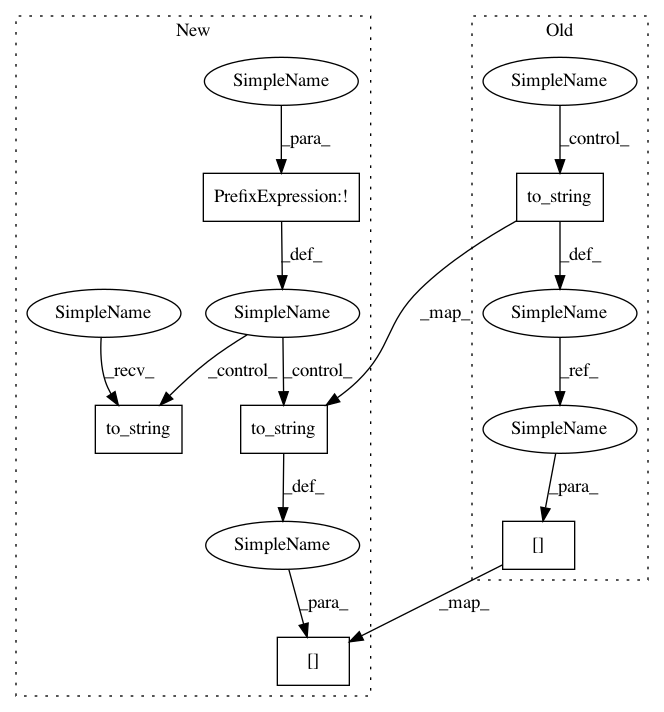

2ac94357935b3bee8ec00c52e91273322ffba642,open_seq2seq/data/text2text/text2text.py,ParallelTextDataLayer,__init__,#ParallelTextDataLayer#,64
Before Change
self.tgt_seq2idx[start_id] = SpecialTextTokens.S_ID.value
// sentence end
end_id = SpecialTextTokens.to_string(SpecialTextTokens.EOS_ID.value)
self.src_seq2idx[end_id] = SpecialTextTokens.EOS_ID.value
self.tgt_seq2idx[end_id] = SpecialTextTokens.EOS_ID.value
// padding
After Change
self._shuffle_buffer_size = self.params.get("shuffle_buffer_size", -1)
self._num_workers = num_workers
self._worker_id = worker_id
if self._pad_lengths_to_eight and not (self.params["max_length"] % 8 == 0):
raise ValueError("If padding to 8 in data layer, then "
"max_length should be multiple of 8")
def file_len(fname):
with open(fname) as f:
for i, l in enumerate(f):
pass
return i + 1
self.dataset_size = file_len(self.source_file)
// load source and target vocabularies to RAM
self.src_seq2idx = load_pre_existing_vocabulary(
self.src_vocab_file,
min_idx=SpecialTextTokens.UNK_ID.value + 1)
self.tgt_seq2idx = load_pre_existing_vocabulary(
self.tgt_vocab_file,
min_idx=SpecialTextTokens.UNK_ID.value + 1)
// unknown symbol
self.src_seq2idx[
SpecialTextTokens.to_string(SpecialTextTokens.UNK_ID.value)] = \
SpecialTextTokens.UNK_ID.value
self.tgt_seq2idx[
SpecialTextTokens.to_string(SpecialTextTokens.UNK_ID.value)] = \
SpecialTextTokens.UNK_ID.value
// sentence start
self.src_seq2idx[
SpecialTextTokens.to_string(SpecialTextTokens.S_ID.value)] = \
SpecialTextTokens.S_ID.value
self.tgt_seq2idx[
SpecialTextTokens.to_string(SpecialTextTokens.S_ID.value)] = \
SpecialTextTokens.S_ID.value
// sentence end
self.src_seq2idx[
SpecialTextTokens.to_string(SpecialTextTokens.EOS_ID.value)] = \
SpecialTextTokens.EOS_ID.value
self.tgt_seq2idx[
SpecialTextTokens.to_string(SpecialTextTokens.EOS_ID.value)] = \
In pattern: SUPERPATTERN
Frequency: 4
Non-data size: 6
Instances
Project Name: NVIDIA/OpenSeq2Seq
Commit Name: 2ac94357935b3bee8ec00c52e91273322ffba642
Time: 2018-07-24
Author: vnoroozi@nvidia.com
File Name: open_seq2seq/data/text2text/text2text.py
Class Name: ParallelTextDataLayer
Method Name: __init__
Project Name: NVIDIA/OpenSeq2Seq
Commit Name: 2ac94357935b3bee8ec00c52e91273322ffba642
Time: 2018-07-24
Author: vnoroozi@nvidia.com
File Name: open_seq2seq/data/text2text/text2text.py
Class Name: ParallelTextDataLayer
Method Name: __init__